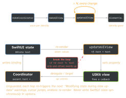

swiftui · folio
In one line: A representable struct wraps a long-lived UIKit object: make runs once per
identity, update on every change, a Coordinator carries callbacks back.
The other way, UIHostingController is a real view controller showing a SwiftUI view.
Download PDF Print view LaTeX source

How it works
UIViewRepresentable(UIViewControllerRepresentablewhen you need VC lifecycle — pickers,SFSafariViewController). Order:makeCoordinator()→makeUIView(context:)→updateUIView(_:context:)× N →static dismantleUIView(_:coordinator:)when the identity goes away.make= one-time setup (view, delegates, targets, gestures, observers).update= idempotent sync of SwiftUI values onto the view, only when they differ — it runs whenever inputs or anything it reads change.Context:coordinator,environment(applycolorScheme,isEnabled…),transaction(.animation != nil⇒ animate the UIKit change).- Coordinator —
NSObjectsubclass: delegate, data source,@objctarget. Down: properties /@Bindingapplied inupdate; up: the coordinator writes the binding or calls a closure. Made once, but the struct is new each update ⇒ refreshcontext.coordinator.parent = self. - Sizing (16):
sizeThatFits(_:uiView:context:) -> CGSize?answers theProposedViewSize;nil= default (intrinsic size + hugging/compression priorities, which is all you had before 16). UIHostingController(rootView:)— push, present, or embed as a child VC:addChild→ addhost.view+ constraints →didMove(toParent:).sizingOptions(16):.intrinsicContentSize/.preferredContentSize. Update via an observable model (orhost.rootView = …).UIHostingConfiguration(16) — SwiftUI in a collection/table cell:cell.contentConfiguration = UIHostingConfiguration { Row(item) }; self-sizing,.margins, no host VC per cell.- Environment: a hosting controller starts a new environment — traits (colour scheme, Dynamic Type) flow in, your
.environment(model)/.environmentObjectdo not: re-inject onrootView.UITraitBridgedEnvironmentKey(17) bridges custom traits.
Example — two-way text field
struct Field: UIViewRepresentable {
@Binding var text: String
func makeCoordinator() -> Coordinator { Coordinator(self) }
func makeUIView(context: Context) -> UITextField {
let tf = UITextField() // once per identity
tf.delegate = context.coordinator; return tf }
func updateUIView(_ tf: UITextField, context: Context) {
context.coordinator.parent = self // fresh binding
if tf.text != text { tf.text = text } } // guard: no echo
final class Coordinator: NSObject, UITextFieldDelegate {
var parent: Field
init(_ p: Field) { parent = p }
func textFieldDidChangeSelection(_ tf: UITextField) {
parent.text = tf.text ?? "" } } } // up: UIKit -> bindingLifecycle and the update loop

The other direction — SwiftUI as a child VC inside a UIViewController:
let host = UIHostingController(rootView: Card().environment(model))
host.sizingOptions = .intrinsicContentSize // iOS 16
addChild(host); view.addSubview(host.view) // 1. contain
host.view.translatesAutoresizingMaskIntoConstraints = false
NSLayoutConstraint.activate([ /* pin edges */ ]) // 2. lay out
host.didMove(toParent: self) // 3. finishTraps
- Setup in
updateUIView(adding gestures, subviews, observers) — duplicated on every update.makesets up,updatesyncs. - Representable behind a changing
.idor unstableForEachid —makeUIViewruns again: scroll position, first responder, player state lost. UIHostingControllerin a cell — wrong/zero height; useUIHostingConfiguration, orsizingOptions = .intrinsicContentSize+ pinned edges.- Retain cycles: a closure stored on a long-lived UIKit object capturing the coordinator (and it the view). UIKit
delegateproperties areweak, so plain delegation is safe.
Remember
“Make once, update often, coordinate back.” update must be safe to call 100 times in a row.